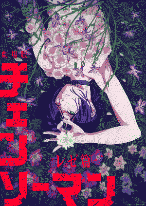
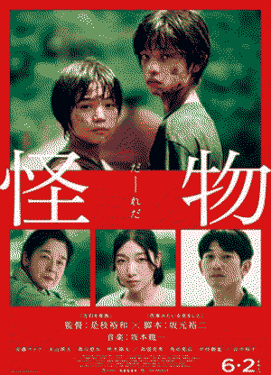
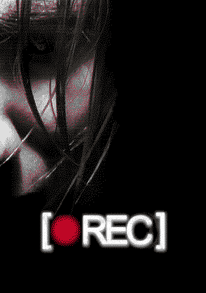
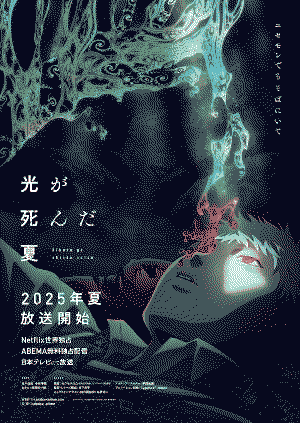

logs
2025 favs
movies
- chainsaw man reze arc dir. tatsuya yoshihara
-  what a great experience this movie was. i watched it during the premiere and i loved seeing so many people in suits. the visuals, the ost, the sound design. there was SO so so much loved poured into this and you can tell with every frame. denji and reze's arc felt so much more devastating compared to the manga alone. just amazing.
- monster dir. hirokazu kore-eda
-  a heartbreaking tale of two kids trying to figure themselves out while the people tells them they are monsters... i actually watched this movie because of someone made a parallel to the summer hikaru died and YEAH... it really is just like that. i cried so much during this.
- rec dir. jaume balagueró, paco plaza
-

this movie was really fucking intense but it was also a really funny experience for me because of the fact that spanish is my native language and so every time they said some shit like
joder tio
i would just burst laughing. but in all seriousness i really did not expect to like this found footage film so much. which of all found footage movies i've watched, this might be one of the best ones. the story is so interesting from the start and it eventually delves into something so much bigger than what we were initially exposed to. i just really adored how this movie exposes us to the truth of what's happening bit by bit. it was a great watching experience.
shows
- the summer hikaru died dir. ryōhei takeshita
-

this anime kind of destroyed me. while watching i paid so much attention to the clear subtext of hikaru being in love with yoshiki and therefore the denial and the monster theming of the show. though while i really like to view it under these lens, i also really like the supernatural aspect of the show. very creepy and interesting!
i need to read the manga BADLY!!!
written on 08.feb.26

madoka magica + rebellion
to me, this is art.
when i first watched the madoka magica anime alongside rebellion around 2015 i was honestly just very confused and didn't get it all. it took me watching this series again when i was a bit older to really appreciate it. i loved the anime. the music, the witch segments animation. the DRAMA of it all. i am insanely in love with the artistry put into this. which feels a bit silly because i am after all talking about madoka magica but at this point idgaf.
and then came rebellion and elevated all of this to 100 times. i have watched this movie at least 10 times. i love it so so so much. homura akemi i would die for you.
i really can't wait for the 4th movie to come out. it will be fucking insane if it manages to be better than rebellion since i already consider that movie perfect.
screenshots


joe pera talks with you
i will never forget how it felt to get home at 2am from my ass retail job and just turning on the tv to put it in the background as i get ready to go to sleep. the last time i had watched tv i must have left it on adult swim because when i turn on my tv i was met with joe pera's show: joe pera talks with you. i don't know why but i could feel there was something very special about this show. i kinda just sat there mesmerized at the screen. it was an episode from its 2nd season, the one where he writes his grandma an obituary.... i think maybe one of the reasons why i was so attached to the tv was because of how much i could relate to what was happening on the screen. i remember thinking what will i do if my grandma ever dies?
... i don't know. it just felt very genuine. and the episode really touched me. i decided to watch the rest of the show that week and i was not disappointed.
i think i love everything about this show, joe pera's vibe is just immaculate. i wish i was him. his relationship with sarah has such a sweetness to it. i am tearing up just thinking about them. while watching the show i remember thinking that i wanted to have what they have with someone else in the future. joe's relationship with his grandma ooooooouuuuuuughhhhh  it really reminded me a lot of my relationship with my grandma. they would crank up jokes and tease each other. i really saw a lot of myself in this show. it's very special to me because of that. i think it's a show that really shows how important the small things in life are.
it really reminded me a lot of my relationship with my grandma. they would crank up jokes and tease each other. i really saw a lot of myself in this show. it's very special to me because of that. i think it's a show that really shows how important the small things in life are.
i was very sad when i got the news that the show got cancelled. though i do have to say that the ending of season 3 was wonderfully done. i rewatched it recently with my girlfriend and i couldn't help but sob when we finished watching it. now that my grandma passed away, i appreciate this show more than when i first watched it. i love this show dearly. and i will always look up to it. this is a wonderful piece of media.

my nana and her quiet home were that to me, a place of undeniable good in the world.
and now that they're gone-
well, i actually still have to take care of the house.
i don't know if i'll ever be able to find that again
or if i'll ever feel alright again
i don't know.
what do i know?

kaiba
i decided to watch this one day because i stumbled upon a gif of the opening one day and i just found the art so so so beautiful!
the gif in question

i was not very smart for watching this while going through a 4 day migraine because the plot can sometimes be a bit tricky to understand in the latter half. as of writing this, i've watched this anime at least 4 times and i must say that i do get it now.
the world of this is so cool and interesting. the main characters (kaiba and neyro) are also so lovely too. understanding their relationship and you learn more and more about them is just soooo. oh my god. i just love them so much. on my first watch i basically couldn't move as i was watching the credits roll on the last episode. it really stayed with me and i kept thinking about it (AND I STILL DO) for so long. it genuinely touched me.
i love the concept of being able to store memories in a chip and as long as you can get another body then you are basically immortal. but of course, there is way more than in the plot of this anime. also the art style is just so charming and cute given how dark this show gets.
there's some parts that are a bit weird tbh that have made go ermm but overall this was an absolute treat to watch and experience. i will never forget it. i also own the bluray so i literally rewatch it every 3 months.
watching this was what made me interesting in watching masaaki yuasa's other work! it has also been my favorite out of all of them.

twin peaks
during april 2023 my girlfriend asked me if i wanted to either watch twin peaks or the haunting of bly manor.
i'm gonna get a tiny bit cheesy for a sec but then my girlfriend proceeded to explain to me the general plot of twin peaks and her face kinda lit up because it's one of his favorite TV shows so i went with twin peaks
i find this show kind of insane tbh. there are some things that haven't aged all that well, but at least i get my giggle or two.
the main mystery of the show of who killed laura palmer was very interesting and i honestly did not see coming the finale of it. there's a lot more to this show than just the murder mystery with its supernatural? themes and that made it very fun to watch.
my favorite character is probably cooper... yes.... he's just so much fun and funny and silly... he's also my bf's favorite character as well. but another contender is probably josephine for being the most BEAUTIFUL woman i've ever seen in my entire life. jesus.
we're currently like halfway through the 2nd season where (for some reason?) we have already established the killer of laura so now it just feels like we're following the main cast shenanigans with some filler stuff on the side and it just feels a little bit messy... but i'm still enjoying it nonetheless.
edit 1: that ending??? alright then... i hope to watch season 3 at some point but i'm not sure where to watch it that wouldn't cost me money LMAO
edit 2: the ending of twin peaks the return kinda broke me but at least i have dougie jones...

moral orel
this show was such an emotional ride :')
despite the show being mostly like a comedy of the lives of these people, i really do like some of the theme this show tackles and how it explores them. i was often feeling really heavy for these characters, specially orel. i grew up in a Very christian enviroment so some of the things discussed in this really got to me in a way. and i get it.
which was the reason why my heart was so heavy when i finished watching it. orel i love you so much.
need to watch the special that released a few years ago.